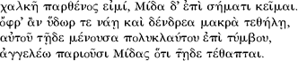

They used to say, my friend, that the words of the oak in the holy place of Zeus at Dodona were the first prophetic utterances. The people of that time, not being so wise as you young folks, were content in their simplicity to hear an oak or a rock, provided only it spoke the truth.
(Phaedrus 275b—c)
It has been the fleets of humming word processors, not the university mainframe computers nor the roaring newspaper printing presses of the turn of the nineteenth century, that have drawn humanists to writing machines and their industrialized texts (Winder 2002). We write perhaps less and less, but we process more and more, with computers working quietly in the background. And only in the dead silence of a computer crash where hours of work have disappeared do we understand clearly how much our writing depends on machines. Formatters, spell checkers, thesauri, grammar checkers, and personal printers support our writing almost silently. Yet we suspect that today's ubiquitous editing and display functions will seem quaint in ten years' time, perhaps as quaint and mysterious as the thump of a typewriter's carriage shift.
Computers are necessarily writing machines. When computers process words, they generate text and a great deal of it. Library catalogues over the globe spew out countless replies to queries (author, keyword, call number, title, subject heading, year, language, editor, series, …); banking machines unabashedly greet us, enquire discreetly about our password in hushed tones, and remind us not to leave our banking card in the machine when we leave (would you like a receipt?). From the internet come waves of pages crafted for each visitor's communicative needs. Computers, however much they calculate, write even more relentlessly.
But are computers typists or writers? We can understand the constant growth of writing, by or through computers, as the effect of two complementary cultural compulsions, each tunneling toward the other from opposing positions and destined to meet ultimately somewhere in an unknown middle ground. The first driving force is the grassroots improvement of computer-assisted writing; the second is artificial intelligence.
From the "accelerated writing" paradigm will come the next generation of word processors — true text processors — that will give us advanced tools for automatic generation of text. The computer is much too powerful to remain a simple word processor, offering only word changes such as spelling and thesaurus functions; it can do much more, such as understanding text well enough to propose radical changes in composition.
Tools for boilerplate construction are good candidates for the text processor of the near future. If I write a reference letter for one student, Sarah, and then have another student, Ralph, who followed much the same program of study and requires a letter as well, I might cut and paste relevant parts of Sarah's letter into Ralph's. At present I would have the tedious task of making sure all occurrences of "Sarah" are replaced by "Ralph" and that no "she" referring to Sarah is left in the pasted text. The text processor of the future should check the coherence of my discourse and transform the pasted text for me automatically, just as even now grammar checkers automatically suggest changes for agreement between verbs and their subjects. In many languages, such text transformations would not be trivial at all: in French it would require changing all the numerous gender agreements ("son professeur de mathématiques l'a décrite comme une bonne étudiante"); in English, though simpler, it might mean transforming gender-specific adjectives or nouns ("pretty"/"handsome," "waiter"/ "waitress") and possessive adjectives ("him," "his"). At present, crude search and replace functions lead to embarrassing slips: in one republished thesis all the occurrences of "thesis" had been replaced with "book," even in the case of "hypothesis," which became the curious neologism "hypobook" throughout the published text.
Creating texts in this accelerated writing paradigm is more about writing text-generating code and using functions that recycle texts into boilerplate components than it is about writing any of the final versions themselves. Separation of content and form is a standard approach for some editing software such as Tex and bibliographic software that generates citations and bibliography. The new text processor will extend this approach by becoming a spreadsheet equivalent for writing: instead of cutting and pasting blocks of text, we will cut and paste text formulae that generate programmatically the final text (see the discussion of a "textual Excel" in Winder forthcoming). We find the infrastructure for this coded text in present-day applications such as automatic translation (increasingly online, such as Babel Fish), formalisms developed in text encoding projects (Unicode standard, Text Encoding Initiative), and programming languages that are increasingly closer to human language (Perl, Ruby, Python; see Malsky 2006, chapter 3, "Language and I MEAN Language"1).
The other, complementary orientation does not have as its goal an incremental enhancement of writers' tools; rather, the goal of the artificial intelligence approach is to construct directly the components of a writing intelligence — machines that have personality and thoughts like humans, not unlike the robots we know from science fiction.
These two projects, accelerated writing and artificial intelligence, seem destined to meet. Writers will become increasingly wedded to programming, to code-generating programmer tools (such as databases and version control), and to the industrial production of text, on the one hand, and computers will become increasingly human on the other.
But there is a third paradigm, a third perspective, less overtly commercial, but perhaps just as focused on that eventual meeting of minds and machines as the first two: automatic generation of art. What is most human is not just the body's artifacts (enhanced by the versatile printing of the accelerated writing paradigm) nor the calculating mind (studied and re-created in artificial intelligence), but as well that elusive creative spirit that traverses all our endeavors. These three orientations are destined to meet because human value ultimately has its source in precisely what is peculiarly human: a certain confluence of mind, body, and spirit.
Our focus here is on automatically produced written art. This is clearly a narrow view of how people communicate in the electronic medium (by definition a multi-media environment) and a radical reduction of the field of generated art. Written language has, however, a singular place in computational systems, if only because writing and reading program code is a faculty shared by both human programmers and computers. As well, generation is perhaps best defined as a reading out of instructions. Printing, as the ultimate and most general reading and writing out of instructions, is where writing, thinking, and creating converge (Winder 2004: 449).
Printing and writing are clearly related. Like printing, writing is machine-mediated language, though the machine may be as simple as a pencil. (Is there writing without printing?) And though we may understand writing as something more than printing, it is often not clear what precisely distinguishes the two. Such is the point that Plato brings home in Socrates's retelling of the myth of the birth of writing. Theuth invents writing as a remedy for memory loss, as if the mind could extend to the page. Thamus, the king of the gods, claims that Theuth's invention is not a tonic for memory but rather a poison, the death of the mind (see the Perseus library (Crane 2006) for Phaedrus; discussion in Derrida 1992). Socrates debates the question of the soul of discourse that writing is supposed to capture, that precise place where discourse takes on its own life. He finds there something we will call art.
The word "art" has many meanings, which reflect that same liveliness of meaning we find in artistic objects themselves:
• Mercantile art: The "pricelessness" of art reflects the fact that it is not produced in the same way as other commercial products (the value of the means of production is not commensurate with the value of the artistic object) and thus art seems to belong to an entirely different economy (the slogan "art for art's sake" is perhaps a reflection of that otherness of art). It is also other in that its uniqueness is seemingly borrowed from the uniqueness and pricelessness of the very life of the artist. Within the commercial system, art is arbitrary because ultimately everything is tied to a unique human existence; anything can be bought and sold as art (witness the "readymade" art of Marcel Duchamp).
• Inspirational art: The "liveliness" of art lies in an overabundance made possible by a surprising efficiency, an efficiency (analogous to Freud's economy principle for wit) that does not make sense with respect to the mercantile economy. For example, Francis Ponge 1999: (346) notes that the French word "oiseau" contains all the vowels (such poetic "trouvailles" generally do not translate; the word in Spanish with all the vowels, written and pronounced, is "murciélago", bat). This is a surprising efficiency in the sense that the otherwise arbitrary word for bird seems to reflect the vocal dimension of its object: a bird is in fact a "vowel" creature. The artistic reflex we cultivate and from which derive a feeling of joy, freedom, generosity, and community, is to recognize and cultivate this "graceful" dimension of the universe, a grace that seems to conspire to harmonize the world in an abundant, costless economy. The artistic vision, as a lay version of the religious experience, adds a layer of meaning that harmonizes the way things are. In the artistic world, nothing is arbitrary, nothing is without meaning, and everything is given freely — if not, it would not be art, it would not be grace. Inspirational art is therefore not arbitrary, but rather motivated by the surprising generosity of the world.
• Living art: Art is not only lively, it is "alive" in that, like a living organism, it assimilates other forms of art, adapts itself to new environments, and reproduces itself in derivative works. Unlike living things, however, art has no "fixed address." It does not need any particular material envelope and by nature tends to bleed into all things at all levels of organization, including the spectator. An artistic organization such as Shakespearean style can find itself just as easily in a play as in a novel, in a style of dress, or in a person. Art is universal form.
As a universal principle of combination, art's most general aesthetic effect is a feeling of vivifying inclusion — connectedness — that attaches the spectator to the grace (costless harmony) of the world. The artistic text must be coherent and alive at the same time. It is an adaptive structure that is stubbornly the same in spite of the constant changing or shimmering of its being. Art is both process and product: through art we capture open-ended productivity (generation) in a closed system (product).
The question we must deal with here is the relation between artful generation and machines. Just as Socrates concluded that writing is discourse without a soul, so we might suspect that machines are writers without creativity. What is artful generation? How do machines simulate, at least, generation? Is there a special kind of artistic generation? A special use of technique?
Criticizing a poorly organized discourse, Socrates points out that the lines of Midas's epitaph, delivered by the bronze statue of a maiden and reported in Plato's text, can be read in any order:
Bronze maiden am I and on Midas's mound I lie.
As long as water flows and tall trees bloom,
Right here fixed fast on the tearful tomb,
I shall announce to all who pass near: Midas is dead and buried here.
(Phaedrus 264d; cited and translated in Carson 1986: 134)
How many permutations are there and do they all truly make sense? (There are n! permutations of n things. Here there are 4 sentences and therefore 4! permutations: 4*3*2*1 = 24 altogether.) Does Socrates know how many there really are? Did he actually generate all permutations (etched in stone? on "papyrus"? in his head?) or can he simply "tell" from each sentence? Are some better than others? How are we to judge?
We can generate all of the permutations easily enough (see Winder 2006, Robotic Poetics, for an online generator), but are there not many more "versions" we might want to consider? For instance, the original Greek is certainly a version:

("Phaedrus" 264d2)
And the transliterated Greek:
chalkê parthenos eimi, Mida d' epi sêmati keimai.
ophr' an hudo êr te naêi kai dendrea makra tethêlêi,
autou têide menousa poluklautou epi tumbou,
angeleo ê pariousi Midas hoti têide tethaptai.
("Phaedrus" 264d3)
And perhaps we should even consider the Greek transliteration of the English translation of the Greek!:
The latter is generated simply by a switch of fonts in a word processor (see Balpe "Imagination" 16–18). Word processors have a "Midas touch" we are all familiar with (whether they produce gold or not is another question). Text is malleable; one text can be transformed into another; the same thing can be said in different ways. Here is the same English epitaph in the BookDings font:
JanusNode (Westbury) has an "ee cummings" mode, along with a sophisticated generation scripting language (see below), which will lay out a text in an ee cummings fashion:
Bronze maiden
am
I
and
on Midas' mound
I lie.
As
long as water flows
and tall
trees bloom,
Right
here
fixed fast on
the tearful
tomb,
I
sh
all announce
to
all
who
pass
near:
Midas
is
dead
and
buried
here.
( JanusNode "ee cummings" style)
Such transmutations are perhaps not of themselves art, but they are certainly starting points of creativity. Whether automatic or human, transmutation is most often simply the source of humor and obfuscation. Luis d'Antin van Rooten's Mots d'heures: Gousses, Rames are phonetic transliterations of English "Mother Goose rhymes" into French, which he then presents, with "serious" exegesis, as a critical edition of a collection of medieval French verse. Here is "Humpty Dumpty":
Un petit d'un petit
S'étonne aux Halles
Un petit d'un petit
Ah! degrés te fallent [3]
Indolent qui ne sort cesse
Indolent qui ne se mène
Qu'importe un petit d'un petit
Tout Gai de Reguennes.
("Poem 1")
Exegesis is given in copious footnotes to this "medieval" poem; here is the third annotation [3], an interpretation of line 4:
Since this personage [the "petit," offspring of the child marriage ("d'un petit") mentioned in the first line] bears no titles, we are led to believe that the poet writes of one of those unfortunate idiot-children that in olden days existed as a living skeleton in their family's closet. I am inclined to believe, however, that this is a fine piece of misdirection and that the poet is actually writing of some famous political prisoner, or the illegitimate offspring of some noble house. The Man in the Iron Mask, perhaps? ("Poem 1", note 3; pages unnumbered)
Russell Horban makes use of the prolific number of graphemes in English (1,120 graphemes for 40 sounds; compared with Italian, which has 33 graphemes for 25 sounds) to transliterate present-day English into a futuristic newspel: "What ben makes tracks for what wil be. Words in the air pirnt foot steps on the groun for us to put our feet in to" (121). In Dunn's Ella Minnow Pea letters of the alphabet are progressively banned from all writings and the eponymous protagonist is reduced to expressing herself in baby talk — "No mo Nollop poo poo!" ["No more Nollop mess"] — and signing her name as "LMNOP" (2001: 197).
Transliteration in a more practical vein is found in spelling reform projects such as Truespel. The online Truespel Converter transforms our epitaph into:
Braanz maedin am Ie and aan Miedis's mound Ie lie.
Az laung az wauter floez and taul treez bluem,
Riet heer fiksd fast aan thu teerfool tuem,
Ie shal unnounts tue aul hue pas neer: Miedis iz ded and baireed heer.
(Davidson 2006)
Transmuted versions proliferate in the machine (the Unicode specification for character sets has over 232 possible characters). Word processors can transmute text so effectively because each character is represented by a specific number or "code point" that can be mapped to any other code point. All word processor text is represented in fundamentally the same way: a set of points that can be dressed up in different font garb. Underlying the word processor's transmutations and Socrates's permutations is a very abstract machine, the fundamental machine of transmutation, a mapping between code points: a permutation is a mapping of one line onto another (for instance, mapping line 1 to 2 and line 2 to 1 gives one combination); a symbol transmutation is a mapping of one alphabet onto another.
For mapping to be coherent, automatic techniques depend on the formally described topographies of the source and target texts. Beyond characters, more important linguistic topographies are syntax, lexical meaning, and narrative. Each of these dimensions brings with it its own processing difficulties. We will look at each in turn.
One fundamental method of generation is through syntactic templates, essentially the boilerplate texts of word processors. Any number of variant epitaphs can be generated by substituting equivalent terms at appropriate positions in the text (Table 27.1).
This "combinatory of combinations" codes for 46 sentences, for a total of 4,096. Here all the combinations are acceptable, but generally syntactic and perhaps semantic constraints will be limiting factors (see Winder 2004: 458ff and the Robotic Poetics site). As syntactic constraints are reduced, generation becomes increasingly simple. Divinatory systems, such as I Ching, are typically built on units that combine freely, with few or no syntactic constraints: a single narrative unit is attached to each free combination of rods. There are no natural languages that are combinatorially complete in this way, i.e., not all combinations of words make grammatical utterances. Even declined languages like Latin, which have very flexible word order, require a particular mix of nouns and verbs. Perhaps only artificial languages such as I Ching can achieve the ideal of a combinatorially complete language.
The systematic choices that are driven by referential and stylistic constraints are part of language use, not of the linguistic system. Syntactic templates are useful starting points for generation because they largely resolve the major systemic linguistic constraints and so set the stage for a free stylistic and referential combinatory. Using such templates Roubaud 1985: (191, cited in Braffort 2006) imagined chimeric poetry which combines the style of two poets. One example is the Rimbaude-laire, a set of poems built from templates extracted from Rimbeau's poems and lexical items from Baudelaire's (or vice versa). Roubaud and Lusson developed combinatory software that automatically generates all the permutations of the lexical items within a template (Roubaud and Lusson 2006; refreshing the page or clicking on "poème" will generate a new poem). JanusNode's textual "DNA" are similarly syntactic templates that are randomly filled with a given vocabulary.
Table 27 1. Syntactic templates.
| Bronze | maiden | am | I | and | on | Midas's | mound | I | lie |
| Silver | missy | above | Goldfinger's | heap | repose | ||||
| Gold | miss | outside | Buster's | pile | perch | ||||
| Metal | girl | supra | Bambi's | stack | recline |
Formally, such chimeric poetry is possible because it is an easy step to abstract away the syntactic structure of a text and then combine the resulting template with a lexicon. Most of the text's linguistic constraints are managed in the templates (though here too there are some stylistic influences); lexical choice, on the other hand, reflects stylistic and referential constraints which are informed by the author's discursive practices and the world the text describes. Roubaud and Lusson's software automates the combining of templates and lexicons (no doubt the method used in the Malvole (Round 2006) and Kurzweil (2006) generators as well, with probabilistic improvements in the latter), but it is clear that template construction and lexicon building could be easily automated as well. From the corpora of two poets, it is possible to generate automatically the two lexicons and templates. What is more challenging is selecting semantically relevant combinations from all the possibilities. A semantic templating system requires a different set of linguistic resources.
A semantic template is a systematic lexical choice that reflects either the state of an imaginary world or a particular way to express statements about that world. For instance, from "She likes pink dresses," where the semantic marker "feminine" is repeated in many of the lexical items, we may wish to generate a second, gender-bent sentence "He likes blue pants," where the semantic markers "masculine" systematically replace (as far as possible) the feminine markers. Both sentences, as well as many others such as "It likes tall trees," correspond to the general syntactic template "<pronoun> likes <adjective> <noun>." But we do not want such a large range in meaning; we would like to modulate sentence generation more finely by systematically choosing semantically related words. That requires considerably more information about the relation between lexical items than do the Rimbaudelaire poems.
To illustrate some of the difficulties and possibilities of semantic templating, we will explore here the programming that would allow us to move from Midas's epitaph to another version which is considerably more abstract in its expression (Table 27.2).
These automatic transformations replace nouns and verbs (marked with asterisks) with words that are doubly more abstract than the target word. Adjectives (and past participles used as adjectives; both marked with a plus sign) are replaced with words that are similar, but not necessarily more abstract. The procedure requires (1) tagging all the words with their part of speech and then (2) making a programmed walk in the WordNet dictionary that leads from one word to another. This set of programmed walks in WordNet is a semantic template in the sense that there is an overall logic in the shift in meaning that affects the entire text; here, the paradigmatic choice at each syntactic spot in the template is under the same "abstracting" influence. Any given generated text is therefore the product of a semantic template, where word choice is regulated, and a syntactic template, where syntactic agreement is established.
Table 27 .2 Double abstraction of Midas's epitaph.
| *Bronze *maiden am I and on Midas's *mound | *Alloy *young female that I am and on Midas's | |
| I *lie. | *artifact I *be | |
| As + long as *water *flows and +tall *trees | As long as *fluid *covers and + long-stalked | |
| *bloom, | *tracheophytes *grow, | |
| Right here + fixed fast on the tearful *tomb, | Right here + immobile fast on the + sniffly *point, | |
| I shall *announce to all who *pass near: Midas is | I shall *inform to all who *change near: Midas is | |
| + dead and + buried here. | +defunct and + belowground here. |
There are a growing number of public domain packages for creating and manipulating text and its linguistic infrastructure. Text generation systems (e.g., KMPL (Reiter 2002) and Vinci (Lessard and Levison, described in Winder 2004: 462ff)) allow for a detailed specification of text structure. Part-of-speech taggers (e.g., TreeTagger (Stein 2006)), have become fairly robust and simple to operate. General text engineering systems (e.g., OpenNLP (Baldridge and Morton 2006) and NLTK (Bird et al. n.d.)) are considerably more difficult to master, but accessible even to inexperienced users (with patience!). The pedagogical, well-documented NLTK is built on the humanist-friendly programming language Python. We will use NLTK to tag each word of the text with a part of speech. NLTK has a number of tagging algorithms that can be combined. This is the part-of-speech template that NLTK produces, using several taggers trained on the accompanying Brown corpus:
Bronze/jj maiden/nn am/bem I/ppss and/cc on/in Midas/nnp 's/poss mound/nn I/ppss lie/vb ./.
As/ql long/rb as/ql water/nn flows/vbz and/cc tall/jj trees/nns bloom/vb, /,
Right/ql here/rn fixed/vbn fast/rb on/in the/at tearful/jj tomb/nn
I/ppss shall/md announce/vb to/in all/abn who/wps pass/vb near/rp :/:
Midas/nnp is/bez dead/jj and/cc buried/vbn here/rb ./.
Codes for parts of speech are found in the NLTK documentation;4 those that interest us are the adjective (jj), past participle (vbn), noun (nn, nns), and verb (vb). NLTK tagging routines use a set of tagged texts from the Brown Corpus included with NLTK to make a lexicon with parts of speech, frequencies, and POS contexts. Variations in cases ("Bronze" vs. "bronze"), punctuation (all punctuation is tagged as itself here), affix and prefixes ("tearful"/"tear") are analyzed by preprocessors that tokenize the input text. To correctly choose a tag for a given word requires several steps:
• The default tagger tags all tokenized words with the proper noun tag (nnp), since most unrecognized words will be in the open class of proper nouns.
• Then the unigram tagger finds the most frequent tags in the reference corpus associated with each word and applies them accordingly. "Bronze" will go from nnp to nn, since in the NLTK Brown corpus nn is its most frequent tag for "bronze."
• A bigram tagger then looks at what tag pairs are in the database: as it turns out, the Brown corpus has tagged occurrences as both jj+nn and nn+nn: "bronze wreath" is analyzed as "bronze/nn wreath/nn" (vs. "bronze/jj neck/nn"):
The bigram tagger understands, however, that the frequency of jj+nn (as in "bronze cannon") is far greater in the corpus than the frequency of nn+nn ("bronze statue") and assumes that since "bronze" is also jj, it can retag it so that the more frequent tag combination is respected. (The tagger is logical, though this is not the standard analysis of "bronze.")
NLTK includes other taggers (i.e., different algorithms and databases for tagging texts) such as the Brill tagger and Hidden Markov Model tagger that make a more thorough analysis of tag probabilities. For our purposes, the default tagging (with nnp), the unigram tagger, and the bigram tagger are sufficient, in spite of certain errors which we will correct manually. All taggers break down in places, and some sentences are simply not analyzable (to experiment with tagging, see UCREL for the online version of the CLAWS tagger).
The basic problem faced by a tagger algorithm is that linguistic information is typically not layered in a homogeneous fashion. For example, though the nn+nn combination is relatively infrequent, in some cases, such as "lawn tennis," it is the only possibility (since "lawn" is not an adjective). Taggers must work not only on a given "horizontal" relation with units at the same level, such as tag combination, but as well they must take into account the idiosyncratic influence of one level on another, such as the influence of a particular lexical choice. Such idiosyncratic "vertical" influences are cited as one justification for tree adjoining grammar formalism, which encapsulate information at different levels using a tree structure — see Abeillé and Rambow 2000: 8.
The POS tagged text is the syntactic half of generation. A semantic template is the complementary organization of the word meanings that are chosen to fill the slots in the syntactic template. Words and their meanings have an intrinsic organization that does not concern syntax at all. WordNet (see Fellbaum 1998) groups words of like meaning into synsets, i.e., into "a set of words that are interchangeable in some context without changing the truth value of the proposition in which they are embedded" (Miller 20065). Synsets are themselves related according to several semantic relations, among which: hypernymy/hyponymy (the more general type of the source word; e.g., "color" is the hypernym of "red"; inversely, "red" is the hyponym of "color"); holonymy/meronymy (the whole of which the source word is a part; e.g., "crowd" is the holonym of "person"); antonyms (extreme opposites such as "good" and "bad"), similar to (adjectives that mean something similar; e.g., "immobile" is similar to "fixed"), and entailment (the source word has as a logical consequence another: e.g., "snoring" entails "sleeping").
Just as our syntactic template is built out of the general syntactic categories (like "noun" and "verb"), our semantic template will use general relations, like "antonym" and "similar to", to describe in general terms the meaning structures of a generated sentence.
Each word of our epitaph has a position in the WordNet meaning universe which is defined by its synset membership. The word "bloom" belongs to 6 noun synsets and 1 verb synset:
Noun
• S: (n) blooming, bloom (the organic process of bearing flowers) "you will stop all bloom if you let the flowers go to seed"
• S: (n) flower, bloom, blossom (reproductive organ of angiosperm plants especially one having showy or colorful parts)
• S: (n) bloom, bloom of youth, salad days (the best time of youth)
• S: (n) bloom, blush, flush, rosiness (a rosy color (especially in the cheeks) taken as a sign of good health)
• S: (n) flower, prime, peak, heyday, bloom, blossom, efflorescence, flush (the period of greatest prosperity or productivity)
• S: (n) efflorescence, bloom (a powdery deposit on a surface)
Verb
• S: (v) bloom, blossom, flower (produce or yield flowers) "The cherry tree bloomed" ("bloom" in Miller WordNet6)
The synset for the verb "bloom" contains "bloom, blossom, flower". The lexical relations that that synset entertains with other synsets can be displayed by clicking on the synset ("S"). The first-level direct hypernym of the verb "bloom" is thus "develop" (a blooming is a kind of developing) and the hypernym of "develop" is "grow" (a developing is a kind of growing):
• S: (v) bloom, blossom, flower (produce or yield flowers) "The cherry tree bloomed"
• direct hypernym
• S: (v) develop (grow, progress, unfold, or evolve through a process of evolution, natural growth, differentiation, or a conducive environment) "A flower developed on the branch"; "The country developed into a mighty superpower"; "The embryo develops into a fetus"; "This situation has developed over a long time"
• direct hypernym
• S: (v) grow (become larger, greater, or bigger; expand or gain) "The problem grew too large for me"; "Her business grew fast" ("bloom" in Miller 20067)
The abstracting algorithm will take all the nouns and verbs in our epitaph and navigate to their second-level direct hypernyms (a double hypernym) and put that double hypernym (or the first word of the synset, if the synset has more than one word) in place of the original word of the epitaph. In a similar way, adjectives and past participles will be replaced with "similar to" words. In the case of the verb "bloom," the replacement word is "grow."
WordNet comes with an assortment of tools for navigating the database (in many programming languages, but the Python modules are perhaps the most compatible with NLTK). In our double hypernym navigation we will generally have to choose between different senses, just as when we syntactically parsed the text we had to decide which part of speech was appropriate. In the case of navigating the sense tree of "bloom", there is no confusion; only one sense is under verb and only one hypernym at each level (bloom → develop → grow). The adjective "dead", on the other hand, has 21 senses (i.e., it belongs to 21 different synsets). We need a method for disambiguating different meanings.
Sense disambiguation depends on context, both syntactic and semantic. For example, to disambiguate "lie" it is useful to know that the subject is a person; in our text, "I" is a personified object, so "I" can tell a lie, lie down, but rarely will "I" lie in a certain position, as in "the mountains lie in the west." Semantic clues also come from the set of words that are in the same passage, whatever their syntactic relation. "Mound" could be a baseball mound, but since in the same context we find "tomb," "dead," and "tearful," our choice would favor a burial mound (though that sense is not found in WordNet).
SenseRelate (Pedersen) is a Perl package that attempts to compare all such relations and disambiguate words according to their immediate context, their position in the WordNet ontology, and a corpus of sense tagged texts. SenseRelate, properly configured, will semantically tag our text as follows (WordNet only tags nouns, adverbs, adjectives and verbs) (Table 27.3).
The online version of SenseRelate8 shows how meanings are selected according to several algorithms that quantify how semantically close entries are in the WordNet network. The Lesk algorithm, for example, evaluates word overlaps in the glosses for each meaning. As we can see above, "tomb" and "mound" are related by the words "earth" and "stone" (in the gloss of "mound") and "ground" and "tombstone" (in "tomb"; "ground" has for gloss "the solid part of the earth's surface"); "dead" and "tomb" are linked by the relation between "life" and "dead man" (in "dead") and "corpse" (in "tomb"; the gloss of "corpse" is "the dead body of a human being"). Table 27.4 shows the Lesk values for the latter pair (top values only; the rest are 0), as generated by the online tool; sense 1 of the adjective "dead" is most closely related to sense 1 of the noun "tomb".
Table 27 .3 SenseRelate meaning selection (excerpt).
| Word POS Sense | WordNet Gloss |
|---|---|
| BRONZE n 1 | an alloy of copper and tin and sometimes other elements; also any copper-base alloy containing other elements in place of tin |
| MAIDEN n 1 | an unmarried girl (especially a virgin) … |
| MIDAS n 1 | (Greek legend) the greedy king of Phrygia who Dionysus gave the power to turn everything he touched into gold |
| MOUND n 4 | a structure consisting of an artificial heap or bank usually of earth or stones; "they built small mounds to hide behind" … |
| TEARFUL a 1 | filled with or marked by tears; "tearful eyes"; "tearful entreaties" |
| TOMB n 1 | a place for the burial of a corpse (especially beneath the ground and marked by a tombstone); "he put flowers on his mother's grave" … |
| DEAD a 1 | no longer having or seeming to have or expecting to have life; "the nerve is dead"; "a dead pallor"; "he was marked as a dead man by the assassin" … |
| BURY v 2 | place in a grave or tomb; "Stalin was buried behind the Kremlin wall on Red Square"; "The pharaohs were entombed in the pyramids"; "My grandfather was laid to rest last Sunday" |
| HERE r 1 | in or at this place; where the speaker or writer is; "I work here"; "turn here"; "radio waves received here on Earth" |
Table 27 .4 SenseRelate word relatedness comparison ("dead" and "tomb").
| Measure | Word 1 | Word 2 | Score |
|---|---|---|---|
| lesk | dead#a#1 | tomb#n#1 | 6 |
| lesk | dead#n#1 | tomb#n#1 | 4 |
| lesk | dead#n#2 | tomb#n#1 | 3 |
| lesk | dead#r#2 | tomb#n#1 | 2 |
| lesk | dead#a#2 | tomb#n#1 | 1 |
| lesk | dead#a#14 | tomb#n#1 | 1 |
| lesk | dead#a#3 | tomb#n#1 | 0 |
| … |
We use such sense relatedness measures to choose between alternative hypernyms or "similar to" adjectives in our abstracting algorithm.
Narrative represents the third major topography. Most generators do not deal directly with that topography; rather, narrative generation is generally approached in the same manner as syntactic and semantic generation, with a few enhancements. Table 27.5 shows some sample generation from JanusNode.
The French site Charabia (see Reyes 2006) has a generator which subscribers use to produce various texts. Here is the start of a (long) philosophical essay that one user programmed:
Tribalisme vs tribalisme
1. Prémisses du tribalisme idéationnel.
Si on ne saurait ignorer la critique bergsonienne du primitivisme substantialiste, Montague systématise néanmoins la destructuration primitive du tribalisme et il en identifie, par la même, l'aspect transcendental en tant que concept primitif de la connaissance.
Cependant, il identifie le primitivisme de la société tout en essayant de le resituer dans toute sa dimension sociale, et le tribalisme ne se borne pas à être un primitivisme existentiel comme concept rationnel de la connaissance.
(Reyes at Charabia9)
Both these generators script narrative through different kinds of syntactic templating. Charabia uses a simplified transition network (Figure 27.1).10
Table 27 .5 JanusNode sample story plot output.
| (none) | Possible title: The Hostility of Erroneous Hate |
Possible title: Baggaging Bros |
|---|---|---|
| This story has two main characters. The first is Noel, a dogged air traffic controller. The second is named Erna. Erna is a dead angel. This is their story, of sex and solitude. | This story has two main characters. The first is a cold master named Una. The second is named Alonso. Alonso is a drunk master. | Your protagonist is a brown skin broke bro named Larissa. Your antagonist is a kindhearted agent named Griselda. Their story is one of creativity and open-heartedness. |
| Noel and Erna meet in an useful motel. Noel wants to discuss personalizing and hugging. Erna is tired of being dead and needing. She knows that Noel is neither dead nor needing. Noel is only after one thing: contents. Erna needs to get contents. The well-intentioned air traffic controller explains to the thrilling angel that the difficult animation is like an atmosphere. Erna feels confused. The moral is worth remembering. Clairvoyant sex is not the same as optimal solitude. | Una and Alonso meet in a boisterous crimson hospital waiting room. Alonso is thinking of giving up being a master to study epitaphs with Una. Una takes out a hostility, and advises Alonso to be more quarrelsome. The penniless master reveals the hostility to the master. Alonso becomes less drunk. | Larissa and Griselda meet in an alien furthest sitting room. Larissa and Griselda have been brought together by their common friendship with a third character named Nicola. Griselda is thinking of giving up being an agent in order to pursue an interest in studying intentional metaphysics. Larissa gives benumbed information about the importance of weakness and destruction. The illiterate agent steals the baggage from the brown skin bro. Larissa becomes more brown skin. The moral is instructive. Interesting creativity is only xenophobic open-heartedness. |
Generation passes through each node in a random fashion, text is written out, variables are set that select the lexicon ($theme_dtd qualifies the chosen thematic word, $theme), loops are defined, and control is passed to subnetworks (comp2, a complement such as "au regard du maximalisme", and adj1_fs, a feminine singular adjective, are described in other networks).
JanusNode uses the same techniques for the most part, but the network is implemented with scripts called TextDNA:
100 Subject(AnimalPoemSetUp) < assign(Cur,"dog,cat,pig") 100 >
100 Subject(ShortAnimalPoem) "A" 100 < GetRhyme(Cur,noun) 100 >
"likes to" 100 < GetRhyme(Cur,verb) 100
> "!" 100
A pig likes to jig!
A cat likes to bat!
(TextDNA and sample output from JanusNode documentation)
The numbers indicate the probability that a given function will fire (100 means that the function will fire 100% of the time); the assign function chooses a word randomly in a set or file of words given in the second argument and assigns it to the variable given in the first argument. JanusNode has some built-in linguistic functionality: a rhyming function (GetRhyme) and minimal morphology. It also has a rudimentary TextDNA generation system which will make scripts from source text. Properly configured, JanusNode scripts are more powerful than Charabia's networks, but are more tedious to write.
Figure 27.1 Intro1 node of the Charabia generator.
One significant variation on this basic template framework for generation are systems that are designed for dialogue, such as A.L.I.C.E. (and the AIML scripting language). Narrative is developed "on the fly" in response to the user's input. In such cases the input text is transformed into data for generation.
Generating truly creative narrative poses a particular problem. The template systems we have dealt with so far only concern the most combinable units of language —words — through word-centered syntax (POS tagging) and semantics (dictionary meanings). Programming narrative is difficult because the fundamental topography of narrative is not linguistic, but rather a topography of events. Grammars offer much accumulated knowledge about syntax that is formalized; dictionaries describe word meaning in a very clear fashion; encyclopedias describe events, but with almost no formalization. No convincing narrative can be made without a large database of our commonsense understanding of events. Narrative does have a linguistic component as well, which dictates how information will be parceled out to the reader. For instance, it is a purely linguistic fact that the order of sentences typically represents the order of events. We understand differently "Paul broke down in tears. Mary broke his channel changer" and "Mary broke his channel changer. Paul broke down in tears." However, it is a fact of the world, not of language, that the destruction of an object might have an emotional impact on a person. Neither a grammar nor a dictionary has that fundamental knowledge, knowledge that a story generator must inevitably orchestrate.
The lightweight templating systems we have seen so far require the user to build events through language. On the contrary, an ideal story generator would either generate events automatically, selected from an events database, or take a general description of an event and generate the appropriate language. Good narrative, the most general topography and the one that connects language most directly to reality, is particularly difficult to master because it is at this level that all the underlying topologies are given a final meaning. Narrative is where information at different levels is evaluated. Poetry shows this most clearly, since even the simple sound or spelling of a word might be the focus of the text. Thus a story generator about birds in French might need to know something about the character level of the word "oiseau" (that it has all the vowels). Similarly, in our epitaph it is perhaps important, or not, that the maiden be bronze, rather than silver. Ultimately, the pertinence of a lexical choice can only be determined by the goal of the narrative; narrative establishes a general logic and hierarchy for all the other kinds of information in the text.
Heavyweight narrative generators (see Mueller 2006 for a bibliography and resources) depend on large databases of encyclopedic knowledge. MIT's Open Mind Common Sense (OMCS; see Singh et al. 2002) was conceived to collect a database of common sense reasoning from internet users and distill it into a computer-usable form. General event scripts are added to these databases or generated from the encyclopedic knowledge. Thought Treasure (Mueller 200011) is a well-documented, pioneering reasoning database that was used as a model for the OMCS database. Here is one of the handcrafted scripts from Thought Treasure:
2. (sleep) [frequent] sleep; [English] sleep; [French] dormir
[ako ∧ personal-script]
[cost-of ∧ NUMBER:USD:0]
[duration-of ∧ NUMBER:second:28800]
[entry-condition-of ∧ [sleepiness sleeper]]
[event01-of ∧ [strip sleeper]]
[event02-of ∧ [ptrans-walk sleeper na bed]]
event03-of ∧ [set sleeper alarm-clock]]
event04-of ∧ [lie-on sleeper bed]]
event05-of ∧ [groggy sleeper]]
event06-of ∧ [sleep-onset sleeper]]
event07-of ∧ [asleep sleeper]]
event07-of ∧ [dream sleeper]]
event08-of ∧ [ring alarm-clock]]
event08-of ∧ [wake alarm-clock sleeper]]
event09-of ∧ [awake sleeper]]
event20-of ∧ [rise-from sleeper bed]]
goal-of ∧ [s-sleep sleeper]]
performed-in ∧ bedroom]
period-of ∧ NUMBER:second:86400]
result-of ∧ [restedness sleeper]]
role01-of ∧ sleeper]
role02-of ∧ bed]
role03-of ∧ alarm-clock]
The sleep script describes the event as being personal, costing nothing (in US dollars!) and having a duration of 28,800 seconds (the conventional 8 hours), requiring a sleeper and sleepiness, having a series of subevents, such as stripping, the sleeper walking (from n/a) to bed, setting the alarm clock, lying on the bed, feeling groggy, beginning to go to sleep, being asleep and dreaming, the alarm clock ringing, etc.
This handcrafted script gives the barest understanding of the sleep event. The Open Mind project collected 700,000 commonsense statements (the OMCS raw data) about the human experience, deduced some 1.7 million formal relations, and compiled them in the ConceptNet application (Lui et al. 2006). Over 2,000 sentences of the OMCS raw data use the word "sleep" or its direct derivatives; here is an arbitrary sample:
1. If a person is bored he may fall asleep
2. Jake has two states — awake and asleep
3. You are likely to find a cat in front of a fireplace, sleeping
4. Sometimes viewing a film at home causes you to fall asleep on the sofa
5. A motel is a place where you can rent a room to sleep in
6. Many people have schedules that allow them to sleep later on weekends than on weekdays
7. The effect of attending a classical concert is falling asleep
8. Something you might do while watching a movie is falling asleep
9. A sofa hide-a-bed is for sleeping
10. Sometimes taking final exams causes sleepiness
11. Ken fell asleep
12. Studies have shown that sleep deprivation leads to impaired consolidation of both declarative and procedural memories
13. Something you might do while sleeping is fall out of bed
14. An activity someone can do is sleep in a hotel
15. You would relax because you want to go to sleep
16. Cindy Lou has a home to sleep in
17. You would sleep at night because you had a busy day
(OMCS raw data)
Heavyweight story generators (such as Make Believe (Liu and Singh 2002); for others see Meuller 2006) will use such information to create a narrative topography. A character sleeping in bed might be in her home, and she may fall out, dream, snore, it could be at the end of a busy day, etc. Simply ordering a selection of the sentences given above and making adjustments gives a rough narrative sequence describing Jake's falling asleep and then falling out of bed (words inserted are in bold; words deleted are struck out):
1. Jake has two states — awake and asleep
17. You too would sleep at night because if you had a busy day
15. You would relax because you want to go to sleep
4. Sometimes viewing a film at home causes you to fall asleep on the sofa
9. A sofa hide-a-bed is for sleeping
11. Ken Jake fell asleep on the hide-a-bed
13. Something you too might do while sleeping is fall out of bed
…
ConceptNet's database is a network of the abstract rendering of such messy statements about the world. Every node of the network will have "incoming" and "outgoing" relations with other concepts (Figure 27.2).
Automatic generation with ConceptNet consists in following event links, playing out the combinatory of their subevents, and creatively developing descriptions based on the other types of relations in the network.
The techniques described here do not produce very comprehensible nor artistic narrative. There is little chance that computers will figure soon on the list of best selling authors. At the same time, these techniques are prerequisites for creative writing by computers or computer-assisted writing by people. Text processors will soon offer thesaurus-like functions that produce variants of a sentence, a paragraph, or perhaps even a text. But what makes good writing?
Figure 27.1 ConceptNet's network of concepts (Liu and Singh).
According to one successful writer, Stephen King, good writing is not about the mechanics of plot:
Stories are found things, like fossils in the ground […]. Stories aren't souvenir tee-shirts or GameBoys. Stories are relics, part of an undiscovered pre-existing world. The writer's job is to use the tools in his or her toolbox to get as much of each one out of the ground as intact as possible. Sometimes the fossil you uncover is small; a seashell. Sometimes it's enormous, a Tyrannosaurus Rex with all those gigantic ribs and grinning teeth. Either way, short story or thousand-page whopper of a novel, the techniques of excavation remain basically the same.
(2000: 163)
Getting a fossil out of the ground requires delicate tools, like a palm-pick, airhose, or toothbrush. Plot is the jackhammer of writers: "a good writer's last resort and the dullard's first choice" (2000: 164). As an exercise for the aspiring writer King describes (in his own good style) a bare-bones narrative about a woman who is stalked in her home by her estranged husband:
It's a pretty good story, yes? I think so, but not exactly unique. As I've already pointed out, estranged hubby beats up (or murders) ex-wife makes the paper every other week, sad but true. What I want you to do in this exercise is change the sexes of the antagonist and the protagonist before beginning to work out the situation in your narrative […]. Narrate this without plotting — let the situation and that one unexpected inversion carry you along. I predict you will succeed swimmingly… if, that is, you are honest about how your characters speak and behave. Honesty in story telling makes up for a great many stylistic faults, as the work of wooden-prose writers like Theodore Dreiser and Ayn Rand shows, but lying is the great unrepairable fault.
(2000: 173)
The great gap between printing and writing seems indeed to concern that "honesty in story telling"; writers must use the finest brush to extract from the mass of our beliefs about the world a single compelling image of the way things inescapably are. But how can the writer be honest about fictional characters!? King's honesty is about what our understanding of the world will allow us to put together reasonably (in his exercise, it is understanding the difference between the sexes in their manner of stalking). How things cohere in principle is a truth that writer and reader must both possess in order to understand each other. That coherence is no more nor less than who writer and reader are together, as one being. It defines the single honest way to set about thinking and speaking.
Let us assume, then, that the artistic text captures the higher truth of the way things are. It is priceless, lively, and live because, by being intensely, exactly itself, it subsumes the many variants of itself. A gender-bent text is artistic only when it implicitly says the straight text and underlines the inescapable reasoning that brings both texts under a same denomination and so subsumes by the same stroke the many possible variations on the theme. By showing what stalking might be, it shows what stalking must be, however the situation may vary. Artistic texts, clearly departing from the norm by a twist or a wriggle, scintillate with meaning and show dramatically the principle of how they came to be — their "makedness." The deepest truth about anything is the way it comes to be, because there lies the secret of how it might continue to be.
If poetic art is indeed "impeded form" or "roughened language" (Shklovsky), it is because narrative leads the reader to tease out a synthetic position — a higher ground —that explains the world of perplexing opposites. Artistic narrative is "roughened reasoning" that leads up to a communal, true way to seeing as one the perplexing opposites of the world. Socrates's complaint about Midas's epitaph is that it does not go anywhere: there is no excavation project to exhume the truth of Midas. There is only the clanking tongue of a bronze maiden, just as petrified as Midas in his grave. Combinatory is not art. Narrative goes somewhere specific: up.
Can computers really write? Only if they can fly. They must move up out of their clanking linguistic machinery to a general truth about the world and to a vantage point that captures the text's fundamental generativity. A good text — an artistic text —is the one that represents best many other texts.
Remarkable steps have been made to give machines the resources needed to build higher meaning, but it will take still more accumulation of data about how people see the world. Minsky estimates that even simple commonsense "is knowing maybe 30 or 60 million things about the world and having them represented so that when something happens, you can make analogies with others" (Dreifus 1998, cited in Liu and Singh forthcoming: 2). We will only see computers generate art from all that commonsense when they can be programmed to tell us something true.
1 <http://www.poignantguide.net/ruby/chapter-3.html>, section 1. "Language and I MEAN Language."
2 <http://www.perseus.org/cgi-bin/ptext doc Perseus:text:1999.01.0173:text Phaedrus:section 264d> and "Greek display."
3 <http://www.perseus.org/cgi-bin/ptext doc Perseus:text:1999.01.0173:text Phaedrus:section 264d> and "Greek transliterated display."
4 <http://nltk.sourceforge.net/tutorial/tagging/section-a1189.html>.
5 <http://wordnet.princeton.edu/man/wngloss.7WN>.
6 <http://wordnet.princeton.edu/perl/webwn o2 &o0 1&o7 &o5 &o1 1&o6 &o4 &o3 &s bloom>.
8 <http://marimba.d.umn.edu/cgi-bin/similarity.cgi>.
9 <http://www.charabia.net/gen/gendisp.php gen 1 &big 1>.
10 <http://www.charabia.net/gen/gendisp.php gen 1 &big 1 &fonc 1>.
11 <http://www.signiform.com/tt/python/query.cgi>.
Abeillé, A. and O. Rambow (2000). "Tree Adjoining Grammar: An Overview." In A. Abeillé and O. Rambow (Eds.). Tree Adjoining Grammars: Formalism, Linguistic Analysis and Processing. Stanford: CSLI Publications, pp. 1–68.
A. L. I. C. E. AI Foundation (2006). <http://www.alicebot.org/>. Accessed August 2006.
Babel Fish Translation (2006). <http://babelfish.altavista.com/>. Accessed August 2006.
Baldridge, Jason and Tom Morton (Eds.) (2006). OpenNLP. <http://opennlp.sourceforge.net/>. Accessed August 2006.
Bird, Steven, Edward Loper, and Rob Speer (Eds.) NLTK: Natural Language ToolKit. <http://nltk.sourceforge.net/>. Accessed August 2006.
Balpe, J.-P., and B. Magné (Eds.) (1991). L'Imagin-ation informatique de la littérature. Saint-Denis: Presses Universitaires de Vincennes.
Braffort, P. (2006). "L'ALAMO: en avant 'post-'." <http://paulbraffort.free.fr/litterature/alamo/alamo_avant_post.html>. Accessed August 2006.
Carson, A. (1986). Eros the Bittersweet. Princeton: Princeton UP.
Crane, G. (Ed.) (2006). The Perseus Digital Library. <http://www.perseus.org>. Accessed August 2006.
D'Antin Van Rooten, L. (1968). Mots D'Heures: Gousses, Rames The D'Antin Manuscript. London: Angus & Robertson.
Davidson, J. (2006). Truespel Converter. <http://www.truespel.com/en/>. Accessed August 2006.
Derrida, J. (1992). "La Pharmacie de Platon" Plato's Pharmacy]. In L. Brisson (Ed.). Phèdre suivi de La Pharmacie de Platon. Paris: Gallimard.
Dreifus, C. (1998). "Got Stuck for a Moment: An Interview with Marvin Minsky." The International Herald Tribune August.
Dunn, M. (2001). Ella Minnow Pea. New York: Anchor Books.
Fellbaum, C. (Ed.) (1998). WordNet: An Electronic Lexical Database. Cambridge, MA: MIT Press.
Hoban, R. (1980). Riddley Walker. New York: Summit Books/Simon & Schuster.
King, Stephen (2000). On Writing: A Memoir of the Craft. New York: Scribner.
Kurzweil, R. (2006). "Kurzweil CyberArt Technologies." <http://www.kurzweilcyberart.com/>. Accessed August 2006.
Lessard, Greg, and Levison, Michael. VINCI Laboratory. <http://www.cs.queensu.ca/CompLing/>. Accessed August 2006.
Liu, H., and P. Singh (2002). "MAKEBELIEVE: Using Commonsense to Generate Stories." In Proceedings of the Eighteenth National Conference on Artificial Intelligence, AAAI 2002, July 28 –August 1, 2002, Edmonton, Alberta, Canada, 2002, pp. 957–8.
Liu, H., and P. Singh (forthcoming). "ConceptNet: A Practical Commonsense Reasoning Tool-kit." BT Technology Journal 22, forthcoming, Kluwer Academic Publishers. <http://web.media.mit.edu/-hugo/publications/papers/BTTJ-ConceptNet.pdf>. Accessed August 2006.
Liu, H., P. Singh, and I. Eslick (2006). ConceptNet v.2.1. <http://web.media.mit.edu/-hugo/conceptnet/>. Accessed August 2006.
Malsky, W. (2006). Why's (Poignant) Guide to Ruby. <http://www.poignantguide.net/ruby/>. Accessed August 2006.
Miller, George (Ed.) (2006). WordNet: An Electronic Lexical Database. <http://wordnet.princeton.edu/>. Accessed August 2006.
Mueller, E. T. (1999). "A Database and Lexicon of Scripts for Thought Treasure." <http://www.signiform.com/tt/htm/script.htm>. Accessed August 2006.
Mueller, E. T. (2000). Thought Treasure. <http://www.signiform.com/tt/htm/tt.htm>. Accessed August 2006.
Mueller, E. T. (2006). "Story Understanding Resources." <http://xenia.media.mit.edu/-mueller/storyund/storyres.html>. Accessed August 2006.
Pedersen, T. (2006). SenseRelate. <http://www.d.umn.edu/-tpederse/senserelate.html>and<http://senserelate.sourceforge.net/>. Accessed April 2007.
Ponge, F. (1999). Tome Premier. Paris: Gallimard.
Reiter, E. (2002). KPML. <http://www.fb10.uni-bremen.de/anglistik/langpro/kpml/README.html>. Accessed August 2006.
Reyes, R. (2006). "Charabia: Essais philosophi-ques." <http://www.charabia.net/gen/gendisp.php?gen 1&big 1&font l>. Accessed August 2006.
Roubaud, J. (1985). "Prothèse." in J.-F. Lyotard and T. Chaput (Eds.). Épreuves d'écriture. Paris: Éditions du Centre Georges Pompidou.
Roubaud, J., and P. Lusson (2006). Rimbaudelaire. <http://alamo.mshparisnord.net/rialt/rimbaud.html>. Accessed August 2006.
Round, M. (2006). Malvole Text Generator. <http://www.malevole.com/mv/misc/text/>. Accessed August 2006.
Singh, P. (2006a). "Open Mind Common Sense Data." <http://csc.media.mit.edu/omcsraw_id.txt.gz>. Accessed August 2006.
Singh, P. (2006b). "Open Mind Experiences." <http://csc.media.mit.edu/OMEXHome.htm>. Accessed August 2006.
Singh, P., T. Lin, E. T. Mueller, G. Lim, T. Perkins, and W. L. Zhu (2002). "Open Mind Common Sense: Knowledge Acquisition from the General Public." In Proceedings of the First International Conference on Ontologies, Databases, and Applications of Semantics for Large Scale Information Systems, Irvine, California. <http://web.media.mit.edu/push/ODBASE2002.pdf>. Accessed August 2006.
Stein, A. (2006). TreeTagger. <http://www.uni-stuttgart.de/lingrom/stein/forschung/resource.html>. Accessed August 2006.
UCREL: University Centre for Computer Corpus Research on Language at the University of Lancaster (2006). CLAWS. <http://www.comp.lancs.ac.uk/ucrel/claws/>. Accessed August 2006.
Westbury, C. (2006). JanusNode. <http://www.janusnode.com>. Accessed August 2006.
Winder, W. (2002). "Industrial Text and French Neo-structuralism." Computers and the Humanities 36.3: 295–306.
Winder, W. (2004). "Robotic Poetics." In S. Shreibman, R. Siemens, and J. Unsworth (Eds.). Blackwell Companion to Digital Humanities. Oxford: Blackwell, pp. 448–68.
Winder, W. (2006). Robotic Poetics. <http://edziza.arts.ubc.ca/winder/rp>. Accessed August 2006.
Winder, W. (forthcoming). "Linking Fancy unto Fancy: Towards a Semantic IDE for Cascading Summaries." In G. Shawver and R. Siemens (Eds.). New Paths for Computing Humanists. Toronto: University of Toronto Press.